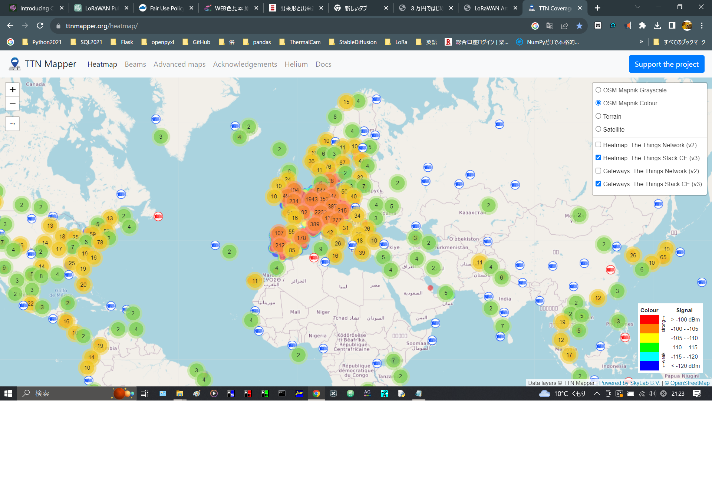
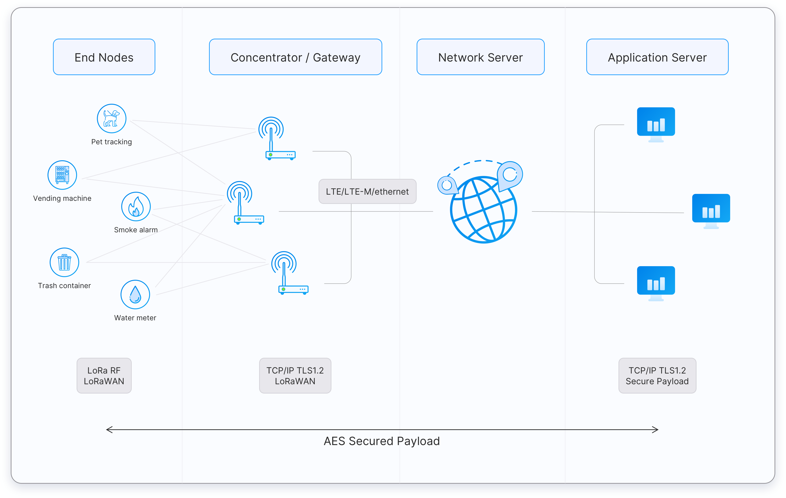

３万円ではじめるLoRaWAN
LoRaWANとは？
LoRaWANとは、LoRaという小電力無線で、センサーなどのデバイスをインターネットと接続し、活用可能にする凄いプラットフォームのことです。
（ちなみに、プラットフォームとは、ハードウェア、ソフトウェア、サービスを総称した概念を指す言葉だそうです。）
LoRaWANプラットフォームの凄い（と思う）ところは、個人や企業などの様々な人々の自由意志によって設置されたゲートウェイを共用し、公共インフラとして自由に相互利用するという点です。そしてこの公共インフラをビジネスで使うこともまったく問題とはなりません。簡単に言っちゃうと、フリーWi-Fiを個人があちこちで公開しているようなものですかね。もちろんちょっと違いますけど。
 ２０１５年にアムステルダムで始まったこのLoRaWANは、今ではヨーロッパ中を隙間なくカバーするほどの多くの公共ゲートウェイが存在しています。このLoRaWANの公共ゲートウェイは TTN Mapper というサイトで世界中のゲートウェイの位置を確認できます。位置情報を公開していないゲートウェイもあるので、実際に利用可能な公共ゲートウェイはもっと多いようです。
日本では TTN Mapperを見る限り、LoRaWANはあまり普及していないようです。このようなリソースのシェアは日本人の気質に合わないのでしょうか。国や地域の文化や経済的なものなどと複雑な関係があるのでしょうが、個人的には少し残念な気がします。
LoRaWANのアーキテクチャ
LoRaWANのアーキテクチャをイラストで示します。（The
Things Networkより引用）

LoRa WANに関する用語
LoRaWANの概要をつかむには、以下の用語を理解するのが手っ取り早いです。
LoRa
無線通信技術の一種
小電力、長距離、免許不要が特徴
LoRa
WAN エンドデバイス（エンドノード）
センシングデバイス（温度、湿度、照度、Co2、風速、電流、など）や、アクチュエータなどの信号を出力するデバイス、これ以外にもシリアル通信（RS-485）が可能なデバイスなど、用途に合わせた様々なデバイスがある。
LoRa WAN ゲートウェイ
エンドデバイスと無線（LoRa）通信し、ＩＰネットワークに接続する機器
LoRa WAN (パブリックLoRa WAN)
公共ゲートウェイ（個人の有志による設置）とThe
Things Stack（ネットワークサーバー）を使って、構築されるネットワーク。
Private LoRaWAN
私設設置のゲートウェイとネットワークサーバーで構築されるネットワーク
Private
LoRa
デバイス同士が直接LoRa（通信技術）を使って通信するものはこれにあたる。
Private LoRa
WANを指して、Private LoRaと呼んでいる場合もあり、定義が曖昧なワード。
The Things
Stack
LoRaWANの公式ソフトウェアスタックで、ネットワークサーバーソフトウェア。
無償のCommunication Edition と、有償のCloud Edition がある。
The Things
Network (TTN)
LoRa WAN を使って、モノとネットワークが繋がるプラットフォームを指す。
したがって、The Things Stack Communication Edition と Cloud を指してThe Things Network
と呼ぶこともできる。
LoRa Alliance
LoRaWANプロトコルの開発、標準化を行う非営利団体で、オープンなグローバル標準としてLoRaWANの仕様を定義、更新し、保守するLoRaWANエコシステムの中心的存在。
チップセットメーカー、センサー製造業者、システムインテグレーター、通信事業者、およびソフトウェア開発者などで構成されている。
また、LoRaWAN製品の認証プログラムも運営しており、製品が特定の品質基準と互換性基準を満たしていることを保証することで、エンドユーザーはLoRaWANテクノロジーを安心して使用できるようになっている。
The Things Industries
Lora Allianceのメンバー企業のひとつで、The
Things Stack Cloud Edition を管理・運営している。